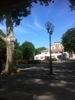

Un coin de ciel bleu

Tête lourde en attendant un malheureux lecteur improbable, place de la Comédie, Montpellier. Qu'une envie : dormir à l'ombre d'un des grands platanes. Dans ce coin de ciel passe parfois un avion, envie de voyage.

Tête lourde en attendant un malheureux lecteur improbable, place de la Comédie, Montpellier. Qu'une envie : dormir à l'ombre d'un des grands platanes. Dans ce coin de ciel passe parfois un avion, envie de voyage.